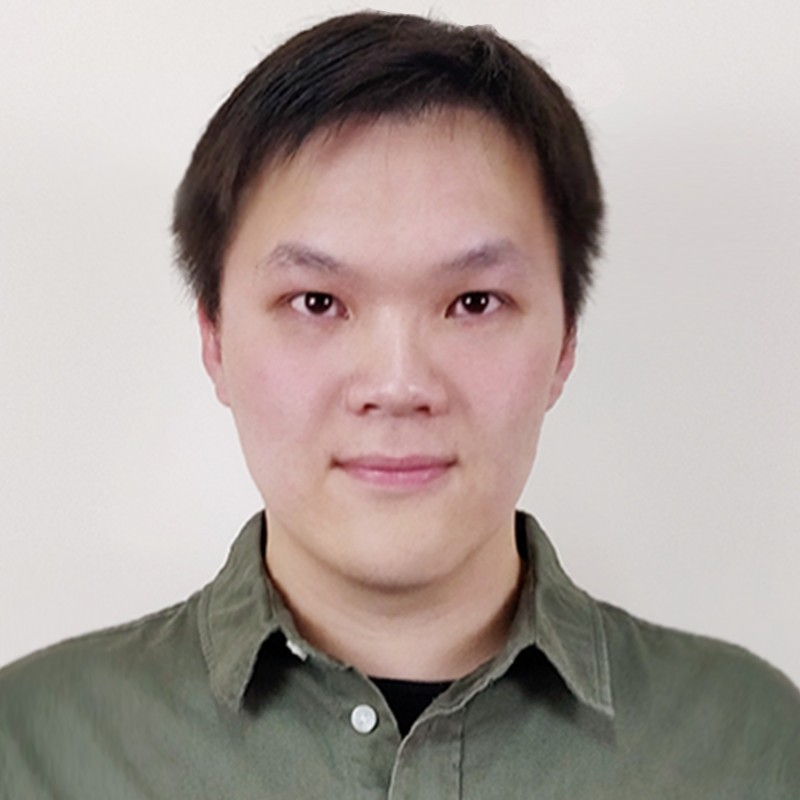

|  |
Hi, I'm Erwin! I am an Associate Professor in the Department of Computer Science at Institute of Science Tokyo (Former TokyoTech). I also serve as a Advisory Researcher at Shanda AI Research Tokyo. Before that, I also served as a Senior Researcher at Huawei Research Japan, a Visiting Professor at Carniege Mello University, and a Research Fellow at Sony CSL. I obtained my Ph.D. at Institute of Science Tokyo, advised by Prof. Hideki Koike. And I've received my Bachelor in Computer Science (with honor, top 10%) at Shanghai Jiao Tong University. My research interest lies in the field of Human-Computer Interaction, Machine Learning, and 3D Vision. My primary works include pose prediction for sports training, 3D body/hand pose estimation, and VR/AR visualizations for skill acquisition. Email / CV / Google Scholar / Linkedin |
{kind=link}
News |
| 2025.09 | One paper is accepted to NeurIPS 2025, see you in San Diego! |
| 2025.08 | Two E-tech Demos and one poster is accepted to Siggraph Asia 2025, congrats! |
| 2025.07 | One paper is accepted to ACM MM 2025, see you in Dublin! |
| 2025.06 | I joined the Department of Computer Science, Institute of Science Tokyo as an Associate Professor! |
| 2024.12 | One paper is accepted to CHI 2025, see you in Yokohama! |
| 2024.08 | One paper is accepted to UIST 2024, see you in Pittsburgh! |
| 2024.01 | One paper is accepted to WACV 2024, see you in Arizona! |
| 2023.12 | One paper is accepted to IEEE VR 2024, see you in Orlando! |
| 2023.08 | One paper is accepted to ISMAR 2023, see you in Sydney! |
| 2023.02 | Two papers are accepted to CHI 2023, see you in Hamburg! |
| 2022.11 | One paper is accepted to WACV 2023, see you in Hawaii! |
| 2022.09 | Defended my Ph.D. dissertation and obtained my Ph.D. degree! |
| 2022.02 | Two papers are accepted to AHs 2022, Congrats! |
| 2021.01 | One paper is accepted to IEEE VR 2021 TVCG Journal Track, Congrats! |
| 2020.08 | One paper is accepted to UIST 2020, Congrats! |
| 2019.09 | Honored to receive JSPS Gakushin DC1 Fellowship! |
| 2019.08 | One paper is accepted to UIST 2019, Congrats! |
| 2019.04 | Starting my internship at Sony Computer Science Laboratories (Sony CSL) |
| 2019.01 | One paper is accepted to WACV 2019, Congrats! |
| 2018.03 | Our Demo on VR Ski Coach received the Best Demo award at IEEE VR 2018, Congrats! |
Research |

|
From Pose to Muscle: Multimodal Learning for Piano Hand Muscle Electromyography
Ruofan Liu, Yichen Peng, Takanori Oku, Chen-Chieh Liao, Erwin Wu, Shinichi Furuya, Hideki Koike NeurIPS, 2025 project page | arXiv | video An approach for Pose to Muscle Estimation in Piano scenarios. |
|
|
From Pose to Muscle: Multimodal Learning for Piano Hand Muscle Electromyography
Ruofan Liu, Yichen Peng, Takanori Oku, Chen-Chieh Liao, Erwin Wu, Shinichi Furuya, Hideki Koike NeurIPS, 2025 project page | arXiv | video An approach for Pose to Muscle Estimation in Piano scenarios. |
|
|
From Pose to Muscle: Multimodal Learning for Piano Hand Muscle Electromyography
Ruofan Liu, Yichen Peng, Takanori Oku, Chen-Chieh Liao, Erwin Wu, Shinichi Furuya, Hideki Koike NeurIPS, 2025 project page | arXiv | video An approach for Pose to Muscle Estimation in Piano scenarios. |
|
|
From Pose to Muscle: Multimodal Learning for Piano Hand Muscle Electromyography
Ruofan Liu, Yichen Peng, Takanori Oku, Chen-Chieh Liao, Erwin Wu, Shinichi Furuya, Hideki Koike NeurIPS, 2025 project page | arXiv | video An approach for Pose to Muscle Estimation in Piano scenarios. |
Miscellanea |
Awards |
Seiichi Tejima Research Award, Tokyo Institute of Technology, 2021
AIP Network Director Award, 6th JST CREST AIP Challenge Program (2021) Best Paper Award, ACM SIGGRAPH VRCAI 2019 Best Research Demo Runner-up, IEEE VR 2019 Best Poster Honorable Mention, ACM VRST 2018 Graduation with Honor: Excellent Graduates of the year 2017, Shanghai Jiao Tong University, 2017 Outstanding Exchange Student of Study in Kyoto Program, Ritsumeikan University, 2016 Excellent International Student Award, Shanghai Jiao Tong University, 2014 Excellent International Student of the Month, Shanghai Jiao Tong University, 2013 |
Invited Talks |
Invited Talk about AIGC for Digital Human, Huawei Cloud, 2024 Invited Talk about BackHandPose at Miraikan, JSPS, 2022 Invited Talk about SolePoser, JST AIP Challenge, 2022 |
Academic Service |
Session Chair, CHI 2025, 2023; SIGGRAPH Asia 2023;
Poster Chair, MVA 2023, 2025; Area Chair, CHI 2025; Reviewer for Journal: TMM, TVCG, CVIU Reviewer for Conference: NeurIPS, CVPR, ICCV, ECCV, ACM MM, CHI, UIST, ISMAR, IEEE VR, SIGGRAPH |
Patent |
US Patent App. 63/089.139.
US Patent App. 68/084.140. (under review) JP Patent JP2022062672A JP Patent JP2022172499A |
|
This website use the awesome template from Jon Barron. |